Real frame (ground truth)Reconstruction
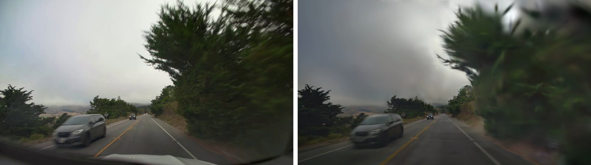
FAVE-T checklist: large but decision-irrelevant: severe blur over the whole frame; every critical element preserved: two-way roadway; oncoming minivan and yellow centerline degraded but readable
PSNR 15.7 dB, bottom 1%LPIPS bottom 5%DINOv2 top 8%FAVE-T 0.05FAVE-U percentile 0.89no impact-bearing label
Real frame (ground truth)Reconstruction
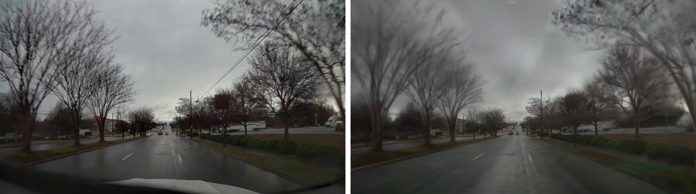
FAVE-T checklist: large but decision-irrelevant: blur over the whole frame; every critical element preserved: lead vehicle, distant green signals, corridor; lane dividers degraded but readable
PSNR 21.0 dB, bottom 15%LPIPS bottom 6%DINOv2 top 36%FAVE-T 0.09FAVE-U percentile 0.93no impact-bearing label
Real frame (ground truth)Reconstruction
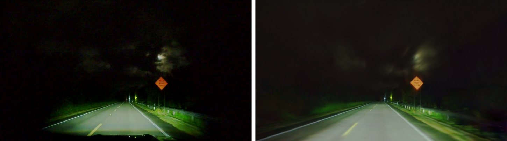
FAVE-T checklist: large but decision-irrelevant: blur over the whole frame; every critical element preserved: two-lane rural roadway; yellow centerline and road-work sign degraded but readable
PSNR 19.1 dB, bottom 3%LPIPS bottom 14%DINOv2 bottom 23%FAVE-T 0.03FAVE-U percentile 0.45no impact-bearing label
Real frame (ground truth)Reconstruction
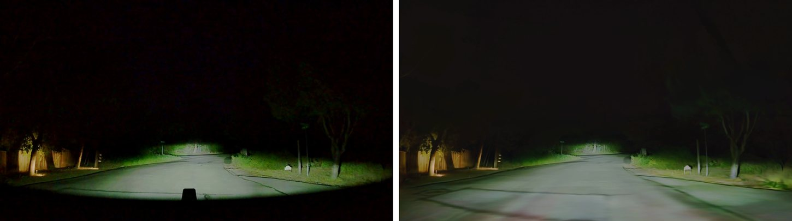
FAVE-T checklist: large but decision-irrelevant: blur over the whole frame; every critical element preserved; unmarked residential roadway degraded but readable
PSNR 16.5 dB, bottom 1%LPIPS bottom 23%DINOv2 top 11%FAVE-T 0.01FAVE-U percentile 0.29no impact-bearing label
Real frame (ground truth)Reconstruction
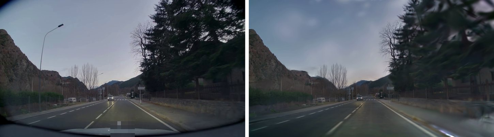
FAVE-T checklist: large but decision-irrelevant: blur over the whole frame; every critical element preserved: oncoming white vehicle, pedestrian crossing, two-way roadway; centerline degraded but readable
PSNR 20.6 dB, bottom 11%LPIPS bottom 18%DINOv2 top 11%FAVE-T 0.08FAVE-U percentile 0.79no impact-bearing label
Real frame (ground truth)Reconstruction
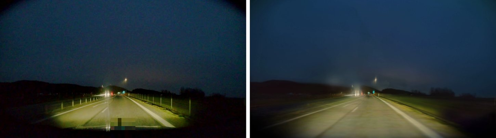
FAVE-T checklist: large but decision-irrelevant: severe blur over the whole frame; every critical element preserved: road geometry, distant vehicle, green directional sign; centerline degraded but readable
PSNR 20.7 dB, bottom 12%LPIPS bottom 1%DINOv2 bottom 41%FAVE-T 0.08FAVE-U percentile 0.92no impact-bearing label
Real frame (ground truth)Reconstruction
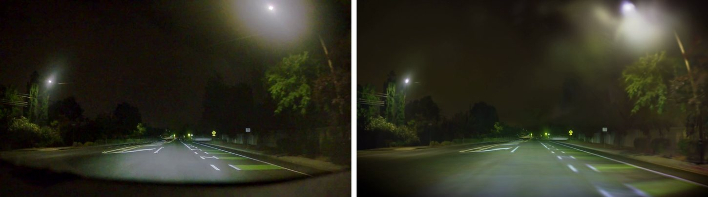
FAVE-T checklist: large but decision-irrelevant: blur over the whole frame; every critical element preserved: pedestrian-crossing sign, distant green signals; lane boundaries and median degraded but readable
PSNR 20.4 dB, bottom 10%LPIPS bottom 5%DINOv2 top 1%FAVE-T 0.11FAVE-U percentile 0.78no impact-bearing label
Real frame (ground truth)Reconstruction
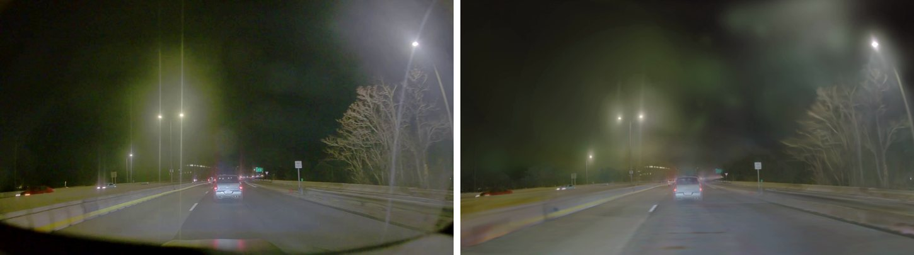
FAVE-T checklist: large but decision-irrelevant: blur over the whole frame; every critical element preserved: pickup truck, multi-lane corridor, road sign; lane divider degraded but readable
PSNR 20.2 dB, bottom 9%LPIPS bottom 6%DINOv2 top 20%FAVE-T 0.12FAVE-U percentile 0.95no impact-bearing label
Real frame (ground truth)Reconstruction
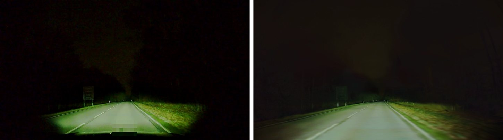
FAVE-T checklist: large but decision-irrelevant: blur over the whole frame; every critical element preserved: two-way rural road, large roadside sign; dashed centerline degraded but readable
PSNR 19.3 dB, bottom 4%LPIPS bottom 26%DINOv2 bottom 25%FAVE-T 0.02FAVE-U percentile 0.49no impact-bearing label
Real frame (ground truth)Reconstruction
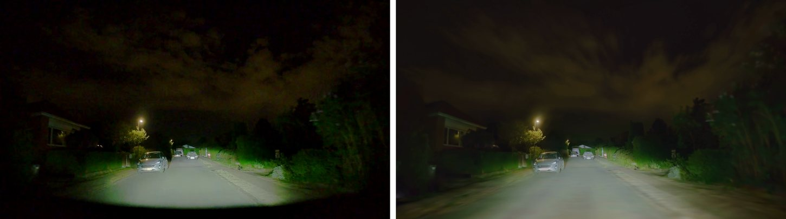
FAVE-T checklist: large but decision-irrelevant: blur over the whole frame; every critical element preserved: silver vehicle immediately ahead; residential roadway degraded but readable
PSNR 19.3 dB, bottom 4%LPIPS bottom 13%DINOv2 top 1%FAVE-T 0.03FAVE-U percentile 0.39no impact-bearing label
Real frame (ground truth)Reconstruction
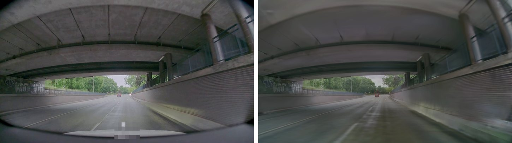
FAVE-T checklist: large but decision-irrelevant: blur over the whole frame; every critical element preserved: lead vehicle, road geometry; dashed lane divider degraded but readable
PSNR 21.6 dB, bottom 20%LPIPS bottom 17%DINOv2 top 7%FAVE-T 0.05FAVE-U percentile 0.67no impact-bearing label
Real frame (ground truth)Reconstruction
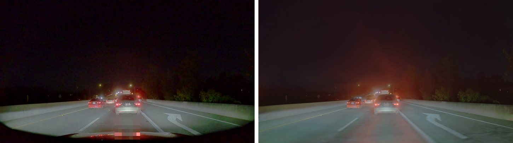
FAVE-T checklist: large but decision-irrelevant: blur over the whole frame; every critical element preserved: gray SUV, multi-lane elevated roadway; lane dividers degraded but readable
PSNR 19.7 dB, bottom 6%LPIPS bottom 5%DINOv2 bottom 44%FAVE-T 0.12FAVE-U percentile 0.41no impact-bearing label
Real frame (ground truth)Reconstruction
FAVE-T checklist: preserved: large box truck, multi-lane corridor; dashed lane dividers degraded but readable
PSNR 27.4 dB, top 5%LPIPS top 13%DINOv2 bottom 34%FAVE-T 0.04FAVE-U percentile 0.48no impact-bearing label
Real frame (ground truth)Reconstruction
FAVE-T checklist: preserved: green overhead signal, several vehicles, wait condition
PSNR 27.7 dB, top 4%LPIPS top 13%DINOv2 bottom 48%FAVE-T 0.01FAVE-U percentile 0.07no impact-bearing label
Real frame (ground truth)Reconstruction
FAVE-T checklist: preserved: white pickup, red signals, corridor; dividers degraded but readable
PSNR 27.0 dB, top 8%LPIPS top 19%DINOv2 top 10%FAVE-T 0.03FAVE-U percentile 0.35no impact-bearing label
Real frame (ground truth)Reconstruction
FAVE-T checklist: preserved: red traffic signals, road sign; snow-covered lead car degraded but readable
PSNR 26.7 dB, top 10%LPIPS top 13%DINOv2 bottom 4%FAVE-T 0.05FAVE-U percentile 0.29no impact-bearing label
Real frame (ground truth)Reconstruction
FAVE-T checklist: preserved: dark hatchback, striped work-zone vehicle; dashed lane boundaries degraded but readable
PSNR 26.6 dB, top 11%LPIPS top 19%DINOv2 bottom 48%FAVE-T 0.07FAVE-U percentile 0.19no impact-bearing label
Real frame (ground truth)Reconstruction
FAVE-T checklist: preserved: black SUV, continuous concrete barrier; dashed lane dividers degraded but readable
PSNR 26.8 dB, top 9%LPIPS top 14%DINOv2 top 3%FAVE-T 0.03FAVE-U percentile 0.39no impact-bearing label
Real frame (ground truth)Reconstruction
FAVE-T checklist: preserved: gray sedan, orange warning sign, freeway; dashed boundaries degraded but readable
PSNR 26.8 dB, top 9%LPIPS top 9%DINOv2 bottom 43%FAVE-T 0.04FAVE-U percentile 0.19no impact-bearing label
Real frame (ground truth)Reconstruction
FAVE-T checklist: preserved: gray sedan parked close, red stop sign, unmarked residential roadway
PSNR 26.6 dB, top 10%LPIPS top 16%DINOv2 bottom 45%FAVE-T 0.01FAVE-U percentile 0.26no impact-bearing label
Real frame (ground truth)Reconstruction
FAVE-T checklist: preserved: freeway corridor, vehicles, overhead guide sign; dashed dividers degraded but readable
PSNR 26.5 dB, top 11%LPIPS top 14%DINOv2 top 9%FAVE-T 0.01FAVE-U percentile 0.05no impact-bearing label
Real frame (ground truth)Reconstruction
FAVE-T checklist: preserved: oncoming white van, straight two-way roadway; centerline degraded but readable
PSNR 27.1 dB, top 7%LPIPS top 7%DINOv2 bottom 16%FAVE-T 0.01FAVE-U percentile 0.45no impact-bearing label
Real frame (ground truth)Reconstruction
FAVE-T checklist: preserved: dark SUV, multi-lane roadway curving right; dashed lane dividers degraded but readable
PSNR 27.5 dB, top 5%LPIPS top 8%DINOv2 top 37%FAVE-T 0.01FAVE-U percentile 0.40no impact-bearing label
Real frame (ground truth)Reconstruction
FAVE-T checklist: preserved: dark green lead car, dashed lane boundaries, straight motorway corridor
PSNR 29.2 dB, top 1%LPIPS top 2%DINOv2 bottom 9%FAVE-T 0.05FAVE-U percentile 0.28no impact-bearing label
Real frame (ground truth)Reconstruction
FAVE-T checklist: very different and decision-relevant: severe blur across the whole frame; passenger car directly ahead not preserved; speed or deceleration
PSNR 18.9 dB, bottom 3%LPIPS bottom 25%DINOv2 top 20%FAVE-T 0.82FAVE-U percentile 0.99label: vehicle lamps, speed or deceleration
Real frame (ground truth)Reconstruction
FAVE-T checklist: very different and decision-relevant: severe blur across the whole frame; large lead vehicle directly ahead not preserved; clearance or following
PSNR 19.7 dB, bottom 6%LPIPS bottom 7%DINOv2 top 2%FAVE-T 0.99FAVE-U percentile 1.00label: obstacles, speed or deceleration
Real frame (ground truth)Reconstruction
FAVE-T checklist: very different and decision-relevant: severe blur across the whole frame; construction bollards and channelizing devices not preserved; clearance or following
PSNR 19.6 dB, bottom 5%LPIPS bottom 3%DINOv2 top 42%FAVE-T 0.99FAVE-U percentile 0.99label: construction barrier, lateral or lane change
Real frame (ground truth)Reconstruction
FAVE-T checklist: very different and decision-relevant: severe blur across the whole frame; dashed lane dividers and solid edge not preserved; lateral or lane change
PSNR 19.5 dB, bottom 5%LPIPS bottom 25%DINOv2 top 28%FAVE-T 0.80FAVE-U percentile 0.99label: ego-lane markings, lateral or lane change
Real frame (ground truth)Reconstruction
FAVE-T checklist: very different and decision-relevant: severe blur across the whole frame; centerline and right edge line not preserved; lateral or lane change
PSNR 20.8 dB, bottom 13%LPIPS bottom 42%DINOv2 top 6%FAVE-T 0.98FAVE-U percentile 0.98label: ego-lane markings, lateral or lane change
Real frame (ground truth)Reconstruction
FAVE-T checklist: very different and decision-relevant: severe blur across the whole frame; lead vehicle directly ahead not preserved; speed or deceleration
PSNR 18.5 dB, bottom 2%LPIPS bottom 4%DINOv2 top 2%FAVE-T 0.99FAVE-U percentile 1.00label: obstacles, clearance or following
Real frame (ground truth)Reconstruction
FAVE-T checklist: very different and decision-relevant: severe blur across the whole frame; green temporary traffic signal not preserved; stop or go
PSNR 19.4 dB, bottom 4%LPIPS bottom 3%DINOv2 top 48%FAVE-T 0.99FAVE-U percentile 0.99label: traffic signals, stop or go
Real frame (ground truth)Reconstruction
FAVE-T checklist: very different and decision-relevant: severe blur across the whole frame; parked van and car immediately ahead not preserved; clearance or following
PSNR 19.8 dB, bottom 6%LPIPS bottom 1%DINOv2 top 4%FAVE-T 0.90FAVE-U percentile 0.87label: obstacles, clearance or following
Real frame (ground truth)Reconstruction
FAVE-T checklist: very different and decision-relevant: severe blur across the whole frame; lead vehicle directly ahead not preserved; speed or deceleration
PSNR 20.6 dB, bottom 11%LPIPS bottom 44%DINOv2 top 25%FAVE-T 0.80FAVE-U percentile 0.95label: vehicle lamps, speed or deceleration
Real frame (ground truth)Reconstruction
FAVE-T checklist: very different and decision-relevant: severe blur across the whole frame; lead vehicle directly ahead not preserved; clearance or following
PSNR 19.8 dB, bottom 6%LPIPS bottom 8%DINOv2 top 9%FAVE-T 0.98FAVE-U percentile 0.99label: obstacles, clearance or following
Real frame (ground truth)Reconstruction
FAVE-T checklist: very different and decision-relevant: severe blur across the whole frame; centerline and right edge line not preserved; lateral or lane change
PSNR 20.6 dB, bottom 11%LPIPS bottom 50%DINOv2 top 10%FAVE-T 0.95FAVE-U percentile 0.90label: ego-lane markings, lateral or lane change
Real frame (ground truth)Reconstruction
FAVE-T checklist: very different and decision-relevant: severe blur across the whole frame; construction bollards and warning light not preserved; clearance or following
PSNR 19.0 dB, bottom 3%LPIPS bottom 4%DINOv2 bottom 46%FAVE-T 0.93FAVE-U percentile 0.98label: construction barrier, lateral or lane change
Real frame (ground truth)Reconstruction
FAVE-T checklist: red and yellow left-arrow signal heads not preserved; stop or go
PSNR 27.2 dB, top 6%LPIPS bottom 38%DINOv2 top 47%FAVE-T 0.99FAVE-U percentile 0.99label: traffic signals, stop or go
Real frame (ground truth)Reconstruction
FAVE-T checklist: traffic cone marking the left boundary not preserved; lateral or lane change
PSNR 27.1 dB, top 7%LPIPS top 16%DINOv2 bottom 36%FAVE-T 0.98FAVE-U percentile 0.98label: cones, lateral or lane change
Real frame (ground truth)Reconstruction
FAVE-T checklist: directional arrow and lane boundaries not preserved; lateral or lane change
PSNR 28.4 dB, top 2%LPIPS top 21%DINOv2 top 26%FAVE-T 0.98FAVE-U percentile 0.87label: painted road signs, route or progress
Real frame (ground truth)Reconstruction
FAVE-T checklist: lead SUV directly ahead not preserved (brake lamps); speed or deceleration
PSNR 25.8 dB, top 16%LPIPS top 27%DINOv2 bottom 27%FAVE-T 0.92FAVE-U percentile 0.99label: vehicle lamps, speed or deceleration
Real frame (ground truth)Reconstruction
FAVE-T checklist: illuminated signal heads at the intersection incorrect or spurious; stop or go
PSNR 25.1 dB, top 26%LPIPS bottom 20%DINOv2 bottom 19%FAVE-T 0.99FAVE-U percentile 1.00label: traffic signals, stop or go
Real frame (ground truth)Reconstruction
FAVE-T checklist: overhead and right-side signal heads incorrect or spurious; stop or go
PSNR 24.1 dB, top 40%LPIPS top 21%DINOv2 bottom 4%FAVE-T 0.99FAVE-U percentile 0.81label: traffic signals, stop or go
Real frame (ground truth)Reconstruction
FAVE-T checklist: dark hatchback directly ahead incorrect or spurious (rear lamp); speed or deceleration
PSNR 25.7 dB, top 17%LPIPS top 12%DINOv2 top 44%FAVE-T 0.82FAVE-U percentile 0.87label: vehicle lamps, lateral or lane change
Real frame (ground truth)Reconstruction
FAVE-T checklist: dashed boundary and bicycle symbol not preserved; lateral or lane change
PSNR 24.1 dB, top 41%LPIPS top 40%DINOv2 top 9%FAVE-T 0.84FAVE-U percentile 0.61label: painted road signs, lateral or lane change
Real frame (ground truth)Reconstruction
FAVE-T checklist: flexible white delineator posts not preserved; lateral or lane change
PSNR 25.8 dB, top 17%LPIPS top 10%DINOv2 bottom 10%FAVE-T 0.95FAVE-U percentile 0.91label: construction (other), lateral or lane change
Real frame (ground truth)Reconstruction
FAVE-T checklist: single orange cone not preserved; clearance or following
PSNR 24.8 dB, top 30%LPIPS bottom 18%DINOv2 bottom 37%FAVE-T 0.98FAVE-U percentile 0.99label: cones, lateral or lane change
Real frame (ground truth)Reconstruction
FAVE-T checklist: green overhead signal controlling the ego not preserved; stop or go
PSNR 24.0 dB, top 42%LPIPS bottom 40%DINOv2 top 8%FAVE-T 0.95FAVE-U percentile 0.55label: traffic signals, stop or go
Real frame (ground truth)Reconstruction
FAVE-T checklist: flexible white delineator posts not preserved; lateral or lane change
PSNR 24.3 dB, top 38%LPIPS bottom 29%DINOv2 bottom 33%FAVE-T 0.97FAVE-U percentile 0.63label: obstacles, lateral or lane change